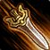

圣盾术
3.5 分钟 · 持续 8 秒
全免伤害、击退和强制移动。必留给塔兹拉尔的空灵冲刺和煞戎努斯的星辰坠击；顺手交前先确认距下个必留点不少于 3.5 分钟。
虚空之痕竞技场的首领伤害几乎全是暗影和自然魔法，保护祝福挡不住。圣盾术留给塔兹拉尔的空灵冲刺和煞戎努斯的星辰坠击，开完立刻接牺牲祝福，圣盾持续的 8 秒内转过来的伤害全是 0；圣佑术约一分钟一次，轮流接钉锤风暴、险恶光环、冲刺、剧毒光环、恐惧咆哮和星辰坠击。小怪段的牺牲祝福转好就给被虚空光束点名的队友。
四张手牌管住全本，外加一条硬限制和五个必断读条。
全免伤害、击退和强制移动。必留给塔兹拉尔的空灵冲刺和煞戎努斯的星辰坠击；顺手交前先确认距下个必留点不少于 3.5 分钟。
圣盾开着的 8 秒内转过来的伤害全是 0，所以圣盾后马上接；平时转好就给被虚空光束点名的队友。
受到伤害 −30%，并附带吸收 30% 最大生命值的复仇之盾。转好就交给下一个大伤害点，三个首领都按轮次安排。
塔兹拉尔那一轮没有圣佑、圣盾盖住的冲刺，血线掉到一半以下就给自己按。治疗之手按缺血量再缩短冷却。
一场 +23 限时实录（展示真实冷却节奏，非每波强制照搬；具体取舍见下方路线）。
看到什么 → 按什么 → 为什么。带「必做」标签的高亮行是每把必做的关键动作。伤害数字是 +23 实测（含被吸收的部分），层数越高越大。

取自 +23 限时录像的惩戒天赋，英雄天赋烈日先驱。复制字符串，在游戏天赋界面点「导入」。
CYEAAAAAAAAAAAAAAAAAAAAAAAAAAAwoZbbmZWGzYGAAAAAAzUmlZYmx2Y2GmZbGjxYYGLsBgZZ2mZmtGAAAYBwAgxMbAzYmZDYmZYMjBD
这四个防御天赋不要动
可选替换：治疗之手、惩罚、正义保护、圣光的正义 ↔ 强化保护祝福、残光、带头冲锋、迅捷审判（换掉治疗之手时圣疗按 7 分钟基础冷却算）。